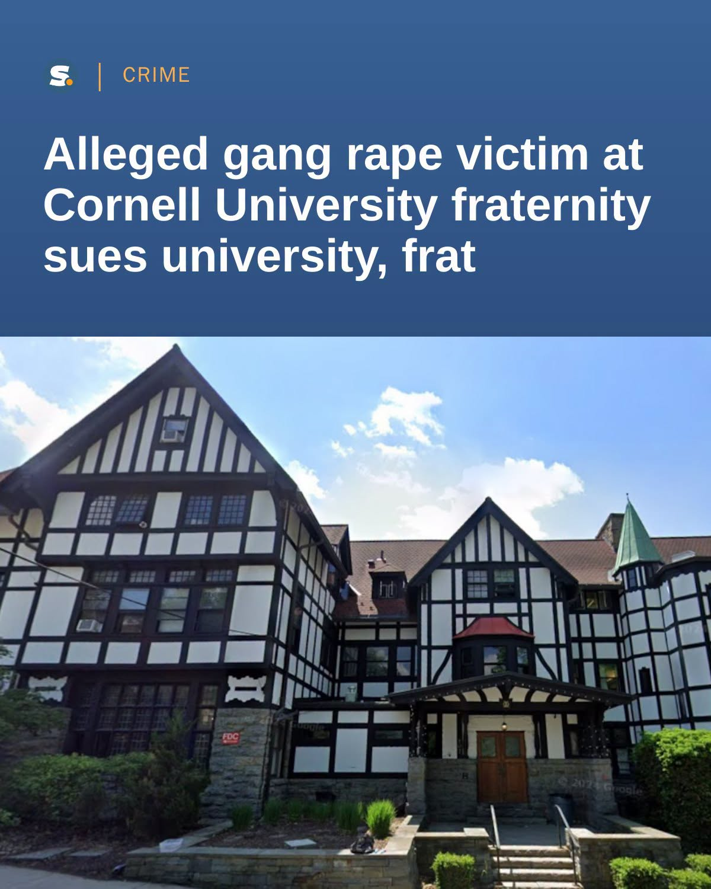
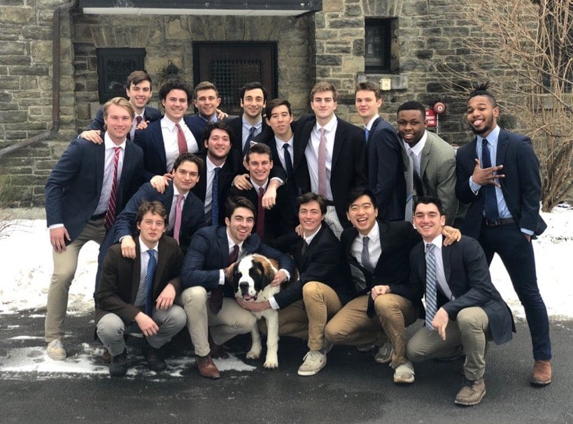

http://www.koreatimes.com/article/20260923/1630914
http://www.koreatimes.com/article/20260922/1630902
아이비리그 명문 코넬대학교의 한 남성 사교클럽(Fraternity)에서 한인 추정 학생이 포함된 남학생 7명이 여학생에게 약물을 복용하게 한 뒤 집단 성폭행했다고 주장하는 사건이 뒤늦게 법정 공방으로 번지며 파문이 일고 있다.
‘코넬 데일리 선’ 등에 따르면 지난 2024년 10월 코넬대 캠퍼스 인근에 위치한 남성 사교클럽 ‘카이 파이(Chi Phi)’ 하우스에서 한 여학생이 케타민 등 마약성 약물을 강제로 투여받은 후 심신상실 상태에서 남학생 7명에게 집단 성폭행을 당했다고 주장하는 사건이 발생했다.
익명의 여학생은 사건 발생 직후 경찰에 신고했으나 대학 당국의 미온적인 대응과 소극적인 조치에 반발해, 지난 14일 코넬대 학교 당국과 카이 파이 사교클럽, 가해 남학생 7명을 상대로 손해배상 청구 소송을 제기했다.
이번 소장에 적시된 가해 학생 명단에는 한인으로 추정되는 이 모 씨를 비롯해 총 7명의 실명이 올라 있다.
소장에서 원고는 가해 남학생들이 동의없이 약물을 복용하게 한 뒤 범행을 저질렀다고 주장하고 있다.
소송이 제기되자 코넬대 측은 공식 입장을 내고 “사건 조사 직후 해당 사교클럽에 대해 캠퍼스 내 활동 정지 및 퇴출 조치를 내렸다”고 해명했다. 또한 학내 성폭력 예방과 안전 대책 강화를 위해 전담 위원회(Task Force)를 가동 중이라고 밝혔다.
그러나 1824년 설립된 남성 사교클럽에서 이 같은 사건이 발생함에 따라, 대학 내 폐쇄적인 사교클럽 문화와 음성적인 파티 형태, 학교 측의 학생 보호 의무 소홀에 대한 비판의 목소리는 더욱 거세질 전망이다.
.
.
소장에 따르면 피해 여성은 사건 당일 코넬대 트라이 델타 사교클럽 행사에 참석한 뒤 일행과 함께 바를 거쳐 카이 파이 하우스로 이동했다. 당시 술을 마신 상태였던 피해 여성은 이곳에서 피고 중 일부로부터 케타민으로 알려진 흰색 가루를 흡입하라는 요구를 받았다고 주장했다.
이후 한인 이모씨 포함한 총 7명이 피해 여성을 성폭행했다고 소장에 적시됐다. 이 가운데 이씨는 코넬대 2027년 졸업 예정자로, 코넬 데일리 선은 대학 디렉토리를 통해 현재도 학생으로 등록된 사실을 확인했다고 전했다.
특히 소장에는 피해 여성이 술과 약물의 영향으로 정상적인 의사표현을 하기 어려운 상태였다는 사실을 일부 남성들이 알고도 성폭행을 이어갔다는 주장이 담겼다.
당시 카이 파이 하우스에서는 피해 여성이 있는 위층 방을 둘러싸고 남성들 사이에 연락이 오갔으며, 7명 중 1명이 오전 1시42분께 사교클럽 회원들이 참여한 스냅챗 단체대화방에 피해 여성이 위층에 있다는 사실을 알리며 다른 회원들을 방으로 부르는 취지의 메시지를 보냈다고 소장에 적시됐다. 이후 다른 회원들이 방으로 들어왔고, 피해 여성은 몸을 가리기 위해 이불 속으로 숨으려 했지만 여러 남성이 차례로 성폭행에 가담했다고 주장했다.
또한 소장에는 이 과정에서 7명이 피해 여성의 몸 위에 케타민을 뿌린 뒤 흡입했으며, 피해 여성에게도 계속해서 약물을 흡입하도록 했다는 주장도 담겼다. 이후 이씨는 또 다른 1명이 피해 여성을 다른 방으로 데려가 추가로 케타민을 흡입하게 한 뒤 강제로 성폭행했으며, 이 같은 상황은 오전 5시45분께까지 이어졌다고 소장에 적시됐다. 피해 여성은 이후 완전히 의식을 잃었고, 다음 날인 20일 다시 의식을 되찾았다고 주장했다.
피해 여성은 사건 발생 약 3주 뒤인 지난 2024년 11월8일 코넬대 경찰에 사건을 신고했다. 코넬대는 같은 날 카이 파이 해당 지부를 임시 정지하고 관련 학생 7명에 대해서도 임시 정지 조치를 내렸다고 소장에 적시돼 있다.

사교클럽......

(사건과 관련없음)
대충 이런 분위기의 남자 대학생 친목모임. 여자버전은 소로리티라고 한다.
난교클럽 ㄷㄷ